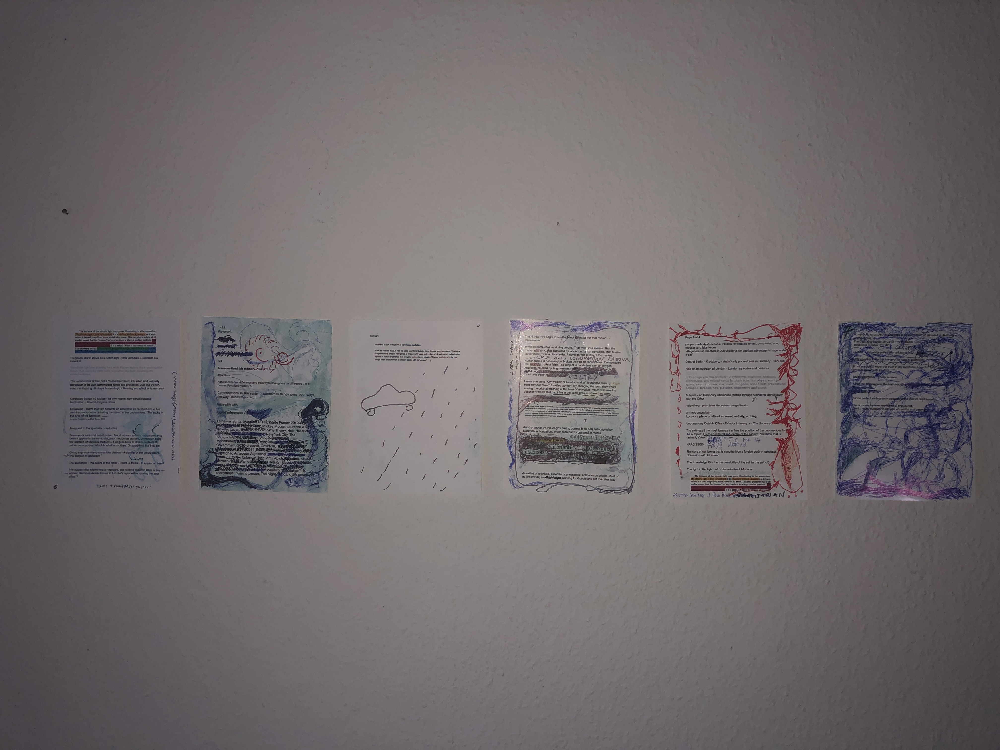
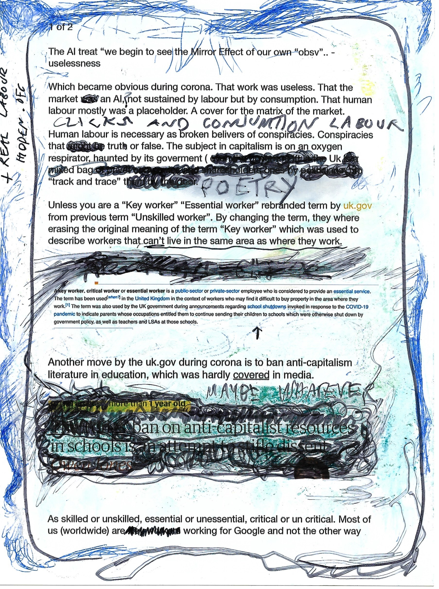
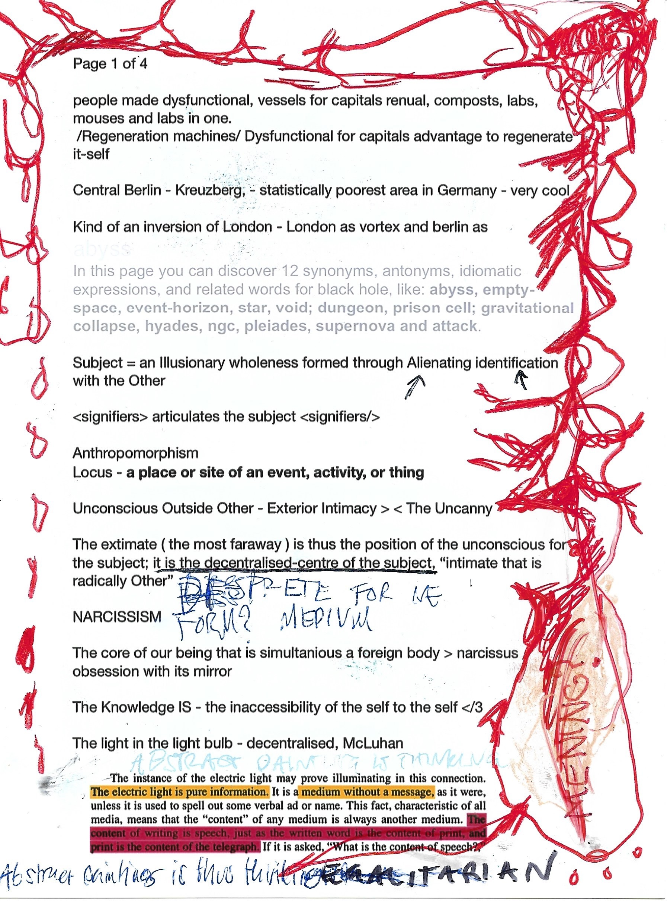

Collages in Keywork

two of five scans, collages in Keywork

 Unless useless, video with sound
Keywork at bbberlin , 2022
Unless useless, video with sound
Keywork at bbberlin , 2022 The video, 'Unless useless' follows a fractured everyday narrativ taking place in a made-up universe where all visible human labour have been replaced by automation. Each still in the video can be distributed and sold as a unique inkjet poster with added doodles by Vera. Together the posters creates a puzzle and a shared whole between shareholders.
The video unless useless is a fictional work taking inspiration from french Nouvelle Vague cinema. It was dealing with the covid-19 time of isolation and a reality where most visible human labour has been replaced by machines.